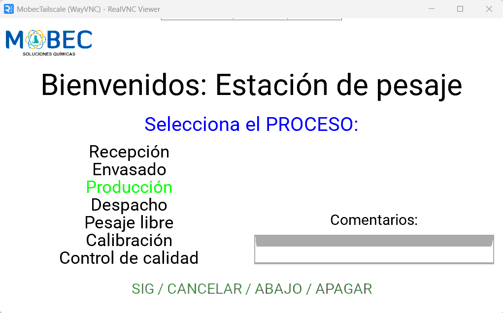

Weight-Label Printing System
On-site data entry and label generation with cloud integration
A standalone client-tailored system for capturing weight data and generating printed labels in real time. Designed for on-site use, it combines a touchscreen interface with cloud connectivity to streamline data entry and tracking.
Status: finished v1 — v2 in planning
Motive
Manual labeling processes are often slow, error-prone, and disconnected from digital records. This project was developed to create a direct link between measurement, data registration, and physical labeling for a chemical factory.
The system focuses on simplicity and usability in real environments, reducing friction in daily operation while ensuring that data is immediately available and organized.
System
The system runs on a Raspberry Pi with a touchscreen interface, handling user input, data processing, and communication with external services.
- Raspberry Pi with touchscreen interface plus physical buttons
- Custom user-centered UI design for data entry
- Integration with Google Sheets API
- Real-time label generation and ethernet printing
- Local operation backup with cloud synchronization
Output
The system enables fast and consistent label generation directly at the point of measurement, reducing manual errors and improving traceability.
Data is automatically stored and organized in the cloud, allowing for later analysis and integration with other processes.
Media
